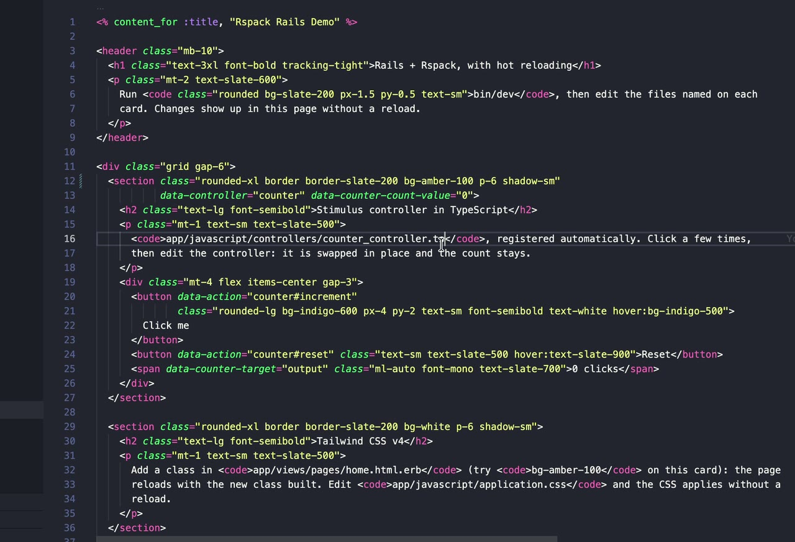
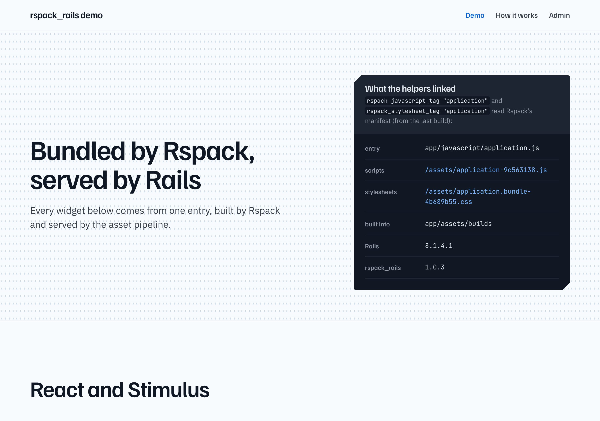
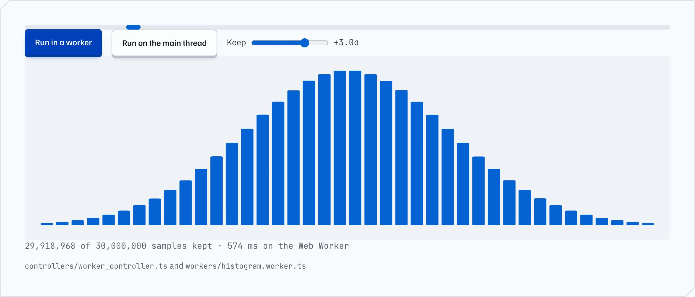
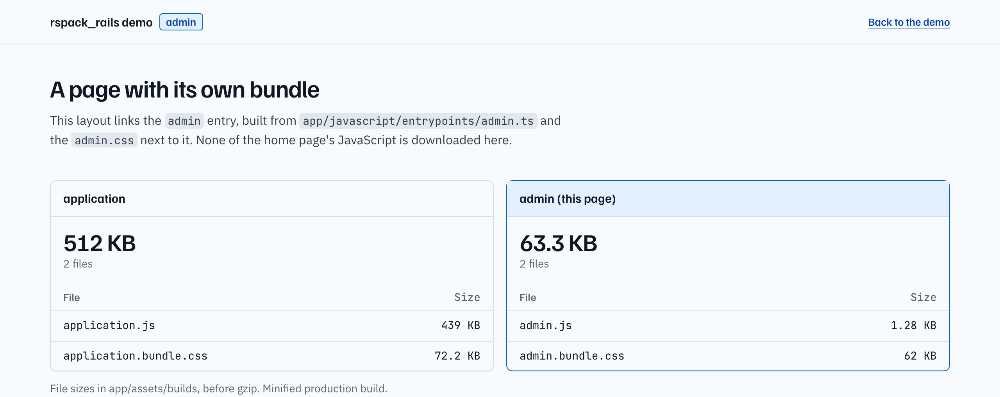

Rspack hot reloading for Rails
For new Rails apps: every save lands in the open page.
$ rails new myapp -m https://raw.githubusercontent.com/tungnt1203/rspack_rails/main/template.rb
Two servers, one origin
Rails proxies /rspack/* to rspack serve. Only the hot update socket goes to it directly.
- Browser
- page and /rspack/*
- Rails
- /rspack/* proxied
- rspack serve
Hot update socket, from rspack serve straight back to the browser
The helpers point at /rspack/…, so bundles, chunks, workers and hot updates are same-origin with the page.
- Browser
- page and assets
- Rails
- last build
- public/rspack
Stop bin/dev and the helpers fall back to the last build. Nothing to configure.
- rspack:build
- bundles
- public/rspack
- served
- Rails
Ship with Kamal: Node.js joins the build stage, and the final image ships without it. Dev containers get Node.js and port 3036 too.
# Install Node.js: assets:precompile runs rspack (rspack_rails)
ARG NODE_VERSION=22.12.0
RUN curl -sL …/node-build/archive/master.tar.gz | tar xz -C /tmp/ && …
# Install node modules
COPY package.json package-lock.json ./
RUN npm ci
RUN SECRET_KEY_BASE_DUMMY=1 ./bin/rails assets:precompile
RUN rm -rf node_modules


Save, and the page follows
-
Under bin/dev
Scripts and styles swap in place. Recorded in the demo app: a view, then a controller.
-
Edit a controller
counter_controller.ts: “click” becomes “tap”. -
The count stays
The controller is swapped; the page never reloads.
-
Edit a view
home.html.erbgainsbg-amber-100. -
The page reloads
The class is already built when it lands.
Create the app
The template adds the gem, asks five questions and builds once.
$ rails new myapp -m …/rspack_rails/main/template.rb
Add Stimulus with controller autoloading? (y/N) y
Add TypeScript type checking? (y/N) y
Add React with Fast Refresh? (y/N) n
Add Tailwind CSS v4? (y/N) y
Add Sass? (y/N) n
rspack_rails is set up with stimulus, typescript, tailwind.
Run bin/dev to start.$ bundle add rspack_rails
$ bin/rails rspack:install
$ bin/rails rspack:install:stimulus
$ bin/rails rspack:install:typescript
$ bin/rails rspack:install:react
$ bin/rails rspack:install:tailwind
$ bin/rails rspack:install:sassAsk the doctor
bin/rails rspack:doctor checks the setup and says what to fix. An error exits with status 1, so CI can run it.
| Check | Result | Detail |
|---|---|---|
| Node.js | Pass | v26.5.1 (rspack needs ^20.19.0 || >=22.12.0) |
| @rspack/core | Pass | 2.3.2 |
| Layout | Pass | application.html.erb uses rspack_javascript_tag |
| Dockerfile | Pass | installs Node.js and node modules |
| Dev server | Warning | not running at http://localhost:3036 |
The demo app, running
React, CSS modules, a Web Worker and Turbo Streams, deployed with Kamal. Open it or read its source.



Tested on every pull request
A new app on each, built and precompiled
- Ruby
- 3.2 or newer
- Node.js
- 20.19 or 22.12 and newer
- Package manager
- bun, yarn, pnpm or npm, read from the lockfile
- Asset pipeline
- None needed; Propshaft or Sprockets still work
Start a new app
Already have an app? bundle add rspack_rails, then bin/rails rspack:install.
$ rails new myapp -m https://raw.githubusercontent.com/tungnt1203/rspack_rails/main/template.rb